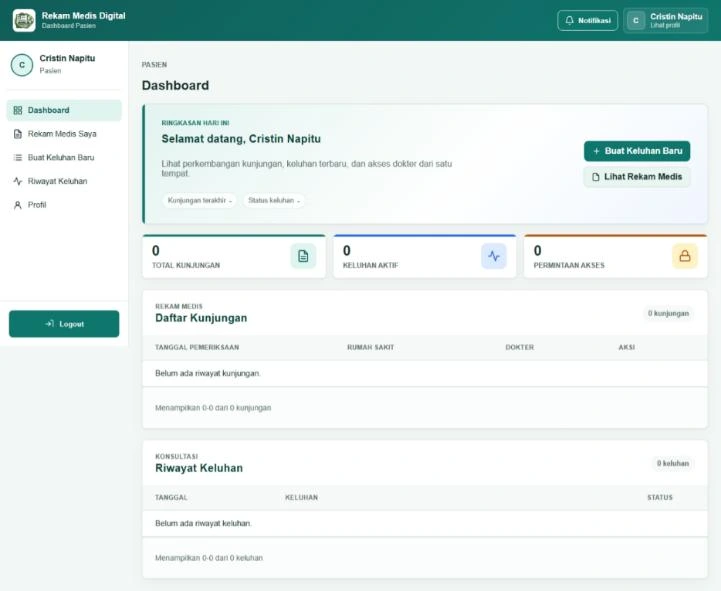

01 · PROYEK TUGAS AKHIR BERSAMA TIMRekam medis.
Rekam medis.
Kendali di tangan pasien.
A Patient-Centered Digital Health Records Platform. Aplikasi web untuk mengatur persetujuan akses dokter terhadap rekam medis pasien.
LARAVEL / MYSQL / RBAC / AES-256-CBC

DASHBOARD PASIEN · DOKUMENTASI PROYEK